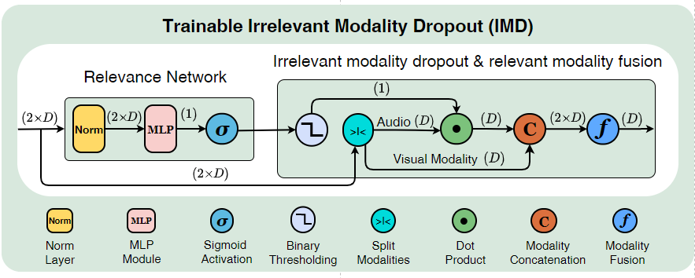
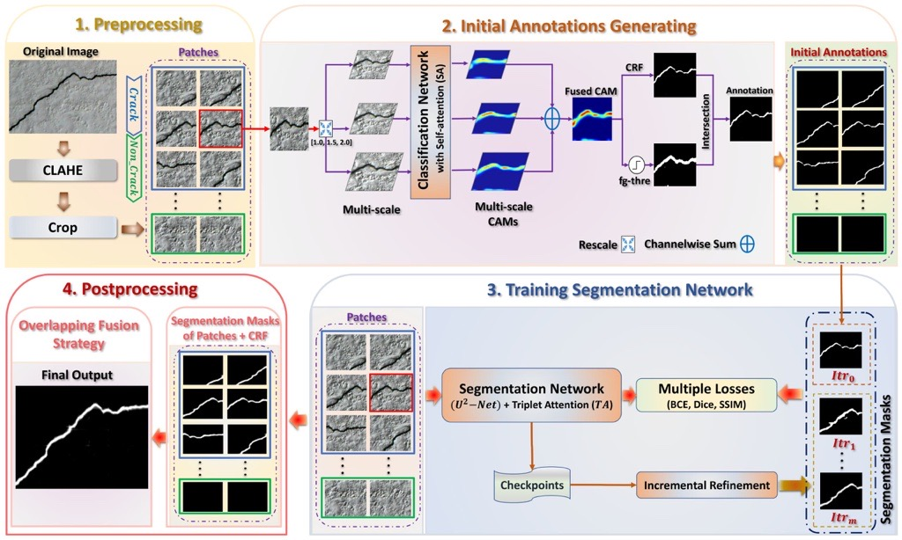

Research Associate, Department of AI & Informatics, Mayo Clinic
I am an Assistant Professor of Biomedical Informatics at Mayo Clinic College of Medicine and Science and a Research Associate in the Department of AI & Informatics, Mayo Clinic, Rochester, MN. My current research interests are (1) computational pathology and foundation models for histopathology, (2) generative AI for synthetic tissue synthesis, (3) multimodal foundation models and agentic AI for clinical applications, and (4) active learning and continual/lifelong learning for adaptive clinical AI systems.
My publications appear in NeurIPS, CVPR, IEEE TNNLS, IEEE TITS, Mayo Clinic Proceedings, and IEEE Reviews in Biomedical Engineering, among others.
Previously, I was a Postdoctoral Research Fellow at the Shenzhen Key Laboratory of Advanced Machine Learning and Applications, Shenzhen University, and the Guangdong Key Laboratory of Intelligent Information Processing, Shenzhen, China.
I received my Ph.D. in Information and Communication Engineering (Computer Vision & Machine Learning) from the School of Electronics and Information Engineering, South China University of Technology, China, supported by the Chinese Government Scholarship. I also hold a B.Sc. and M.Sc. in Computer Science.
alfasly.saghir@mayo.edu
News
| Apr 2026 | Tutorial proposal accepted at ICHI 2026: Synthetic Biomedical Data Generation Across Modalities. |
| Jan 2026 | Appointed as Assistant Professor of Biomedical Informatics at Mayo Clinic College of Medicine and Science. |
| Dec 2025 | Paper accepted at NeurIPS 2025: HeteroTissue-Diffuse: Semantic and Visual Crop-Guided Diffusion Models for Heterogeneous Tissue Synthesis in Histopathology. |
| Nov 2025 | Co-organized the NeurIPS 2025 Competition on Self-Supervised Learning for Cancer Pathology Foundation Models (SLC-PFM). [Website] |
| Nov 2025 | Delivered an invited seminar at Kaiko-AI on generative AI for histopathology. |
| Dec 2025 | Named AI Award Finalist — VIBE Summit, Mayo Clinic, December 9, 2025. |
| Sep 2025 | Received the Excellence Award in AI, Data Science, and Computational Biology — Mayo Research Fellows' Association (MRFA), Rochester, Minnesota. |
| Jun 2025 | Finalist in the Research Pitch Competition — Mayo Clinic, June 25, 2025. |
| Jul 2025 | Organized and delivered hands-on workshop: Practical AI in Healthcare: From Fine-tuning Large Models to Deployment with Open Source Tools — Mayo Clinic AI Summit 2025. |
| Apr 2025 | Invited seminar at AbbVie (Computer Vision Research Team): Histopathology Image Analysis — Challenges and Limitations. |
| Feb 2025 | Paper published in Scientific Reports: Validation of Histopathology Foundation Models through Whole Slide Image Retrieval. |
| Jan 2025 | Paper published in IEEE Reviews in Biomedical Engineering: Analysis and Validation of Image Search Engines in Histopathology. |
Publications
-
NeurIPS 2025
 Neural Information Processing Systems (NeurIPS), 2025HeteroTissue-Diffuse is a latent diffusion framework for synthesizing histopathology images that preserve tissue heterogeneity and fine morphological detail. A novel conditioning mechanism scales to both annotated and unannotated datasets, enabling realistic, diverse, and annotated synthetic tissue slides for training data augmentation and privacy-preserving model development.
Neural Information Processing Systems (NeurIPS), 2025HeteroTissue-Diffuse is a latent diffusion framework for synthesizing histopathology images that preserve tissue heterogeneity and fine morphological detail. A novel conditioning mechanism scales to both annotated and unannotated datasets, enabling realistic, diverse, and annotated synthetic tissue slides for training data augmentation and privacy-preserving model development. -
CVPR 2024IEEE/CVF Conference on Computer Vision and Pattern Recognition (CVPR), 2024PathDino is a compact histopathology Transformer (~9M parameters) with rotation-invariant representations. Introduces HistoRotate (360° augmentation) and a fast patch selection (FPS) method that preserves spatial distribution while reducing computation. Achieves competitive performance with models 10× larger.
-
MCP:DH 2024
 Mayo Clinic Proceedings: Digital Health, 2024Rigorous evaluation of CLIP-based foundation models (PLIP, BiomedCLIP) against domain-specific histopathology models across 8 diverse datasets (4 Mayo Clinic internal + 4 public: PANDA, BRACS, CAMELYON16, DigestPath). Domain-specific models such as DinoSSLPath and KimiaNet consistently outperform general-purpose foundation models, underscoring the importance of curated, domain-specific training data.
Mayo Clinic Proceedings: Digital Health, 2024Rigorous evaluation of CLIP-based foundation models (PLIP, BiomedCLIP) against domain-specific histopathology models across 8 diverse datasets (4 Mayo Clinic internal + 4 public: PANDA, BRACS, CAMELYON16, DigestPath). Domain-specific models such as DinoSSLPath and KimiaNet consistently outperform general-purpose foundation models, underscoring the importance of curated, domain-specific training data. -
Preprint 2023Preprint, 2023SDM: a patch selection method for whole-slide images that minimizes patch count while capturing all morphological variations. Outperforms state-of-the-art methods without requiring parameter tuning, enabling more efficient representation learning on gigapixel images.
-
IEEE TITS 2023
 IEEE Transactions on Intelligent Transportation Systems, 25(6):6013–6022, 2023OSRE estimates a parked bike's rotation relative to its designated parking spot using 3D graphics and computer vision. Enables intelligent surveillance systems, bike-sharing management, and smart city applications. Introduces a synthetic dataset (SynthBRSet) for training and evaluation.
IEEE Transactions on Intelligent Transportation Systems, 25(6):6013–6022, 2023OSRE estimates a parked bike's rotation relative to its designated parking spot using 3D graphics and computer vision. Enables intelligent surveillance systems, bike-sharing management, and smart city applications. Introduces a synthetic dataset (SynthBRSet) for training and evaluation. -
IEEE TNNLS 2024IEEE Transactions on Neural Networks and Learning Systems, 35(2):2496–2509, 2024SSTSA: a novel spatiotemporal attention scheme combining temporal and spatial multi-headed self-attention modules in a synchronized manner for efficient and effective video action recognition, outperforming prior transformer-based methods.
-
CVPR 2022

IEEE/CVF Conference on Computer Vision and Pattern Recognition (CVPR), 2022IMD (Irrelevant Modality Dropout): a multimodal learning approach for video action recognition that adaptively identifies and drops audio modalities irrelevant to the visual content, improving recognition on datasets with modality-specific annotations. -
Neurocomp. 2022Neurocomputing, 516:231–244, 2022A fast, independent, adaptive two-stage algorithm for selecting the most discriminative and representative video frames, significantly reducing dataset size while improving action recognition performance.
-
Appl. Intel. 2022

Applied Intelligence, 53(11):14527–14546, 2022Weakly supervised segmentation of pavement cracks using multi-scale object localization and iterative annotation refinement, reducing the need for expensive pixel-level labels while achieving competitive segmentation accuracy. -
IEEE Access 2019IEEE Access, 2019Multi-label similarity learning framework for vehicle re-identification that exploits label correlations and multi-granularity features for robust cross-camera vehicle matching.
-
ICIP 2019
 IEEE International Conference on Image Processing (ICIP), 2019Variational representation learning for object re-identification. Evaluated on vehicle re-ID, person re-ID, and face recognition benchmarks, demonstrating that variational approaches improve generalization across unseen identities.
IEEE International Conference on Image Processing (ICIP), 2019Variational representation learning for object re-identification. Evaluated on vehicle re-ID, person re-ID, and face recognition benchmarks, demonstrating that variational approaches improve generalization across unseen identities. -
IEEE Access 2019IEEE Access, 2019A fast, lightweight, auto-zooming CNN framework for detecting small pedestrians in outdoor surveillance videos, using adaptive zoom and multi-scale feature fusion to improve detection accuracy at varying distances.
Additional Publications
-
Scientific Reports, 15(1):3990, 2025
-
IEEE Reviews in Biomedical Engineering, 18:350–367, 2025
-
Geometric Edge Convolution for Rigid Transformation Invariant Features in 3D Point CloudsNeurocomputing, 622:129313, 2025
-
Auxiliary Audio-Textual Modalities for Better Action Recognition on Vision-Specific Annotated VideosPattern Recognition, 156:110808, 2024
-
Sequential Patching Lattice for Image Classification and EnquiryAmerican Journal of Pathology, 194(10):1898–1912, 2024
-
Model-Agnostic Binary Patch Grouping for Bone Marrow Whole Slide Image RepresentationAmerican Journal of Pathology, 194(5):721–734, 2024
-
AlcLaM: Arabic Dialectal Language ModelACL — Proceedings of the Second Arabic NLP Conference, 2024
-
arXiv Preprint, arXiv:2309.11510, 2023
Awards & Recognition
Talks & Presentations
Teaching & Mentoring
Mentored 15+ students and research interns across multiple institutions. Selected outcomes:
Service
- Tutorial Co-organizer — Synthetic Biomedical Data Generation Across Modalities, ICHI 2026.
- Competition/Workshop Co-organizer — Self-Supervised Learning for Cancer Pathology Foundation Models (SLC-PFM) NeurIPS 2025.
- Workshop Co-organizer — Practical AI in Healthcare: From Fine-Tuning Large Models to Deployment with Open Source Tools, Mayo Clinic AI Summit 2025.
- Area Chair — IJCNN (International Joint Conference on Neural Networks). 2025–Present.
- IEEE Transactions on Pattern Analysis and Machine Intelligence
- IEEE Transactions on Medical Imaging
- IEEE Transactions on Image Processing
- IEEE Transactions on Neural Networks and Learning Systems
- IEEE Transactions on Circuits and Systems for Video Technology
- IEEE Transactions on Artificial Intelligence
- IEEE Transactions on Multimedia
- Pattern Recognition
- Pattern Recognition Letters
- IEEE Reviews in Biomedical Engineering
- CVPR 2021, 2022, 2023, 2024, 2025
- ICCV 2023, 2025
- ECCV 2024
- AMIA Annual Symposium 2025–Present
- ACM Multimedia (ACM MM)
- NeurIPS 2025
- MICCAI 2026